SAKİN DOSYASI№ 2891
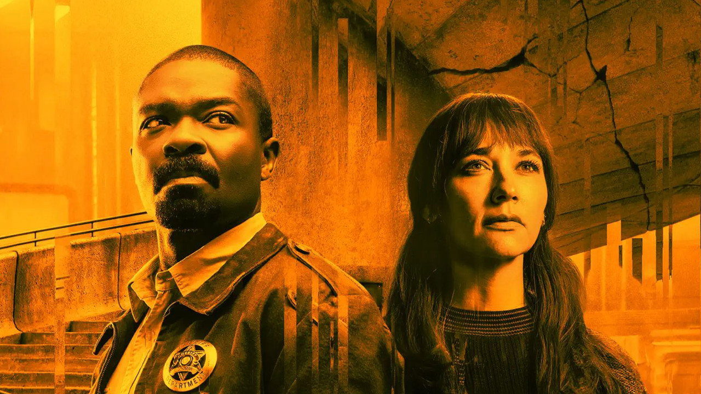
HOLSTON BECKER
DAVID OYELOWO
Silonun sevilen şerifi. Karısını temizliğe gönderdikten iki yıl sonra hücresine girip aynı cümleyi söyledi. Rozetini Juliette'e bıraktı.
On bin kişi, yerin 144 kat altında yaşıyor. Dışarısının öldürdüğünü biliyorlar; başka bir şey bilmiyorlar. Kimse neden diye sormuyor — soranlar dışarı çıkıyor.
SİLO 18'E İN ↓Silonun en üst katında, yemek masalarının karşısında dev bir ekran durur. Dışarıdaki sensörlerden gelen görüntüyü gösterir: ölü bir tepe, kurşuni bir gökyüzü ve yamaçta yatan iki beden. Sakinler o bedenlerin kim olduğunu bilir — Şerif Holston Becker ve karısı Allison. İkisi de aynı yasaklı cümleyi söyledi, ikisi de dışarı çıktı, ikisi de sensörleri temizledi ve öldü.
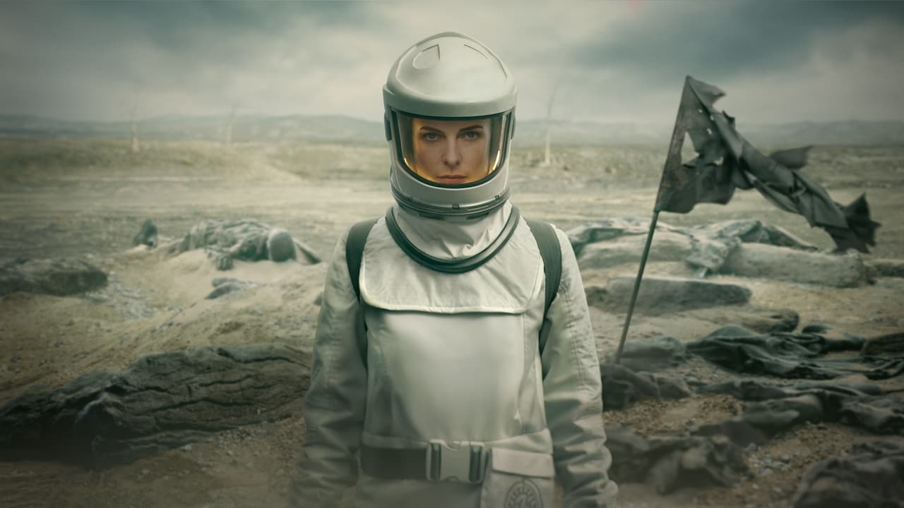
Herkesin sorduğu ama kimsenin yüksek sesle soramadığı soru şu: Ekran gerçeği mi gösteriyor? Dışarı çıkan herkes — istisnasız herkes — ölmeden önce dönüp sensörleri temizliyor. İçeridekilere son bir iyilik. Ama kimse onları buna zorlayamaz. O hâlde neden hepsi temizliyor? Cevap, bu dizinin en zarif fikirlerinden biri ve ilk sezonun kalbinde duruyor.

Silonun sevilen şerifi. Karısını temizliğe gönderdikten iki yıl sonra hücresine girip aynı cümleyi söyledi. Rozetini Juliette'e bıraktı.
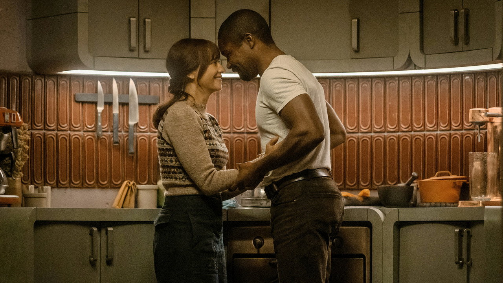
IT çalışanı. Silinmiş bir sabit diskin içinde silonun anlatmadığı bir tarih buldu. Gördüğü şey ona dışarının güvenli olduğunu düşündürttü. Yanılıyor muydu?
Temizlik ritüeli silonun hem en büyük cezası hem de tek dinî törenidir: talep eden kişi hücreye alınır, kendisine el yapımı bir koruyucu kıyafet giydirilir, eline yün pedler tutuşturulur ve hava kilidinden dışarı bırakılır. Kapı bir daha açılmaz. Kıyafet en fazla birkaç dakika dayanır. Herkes bunu bilir. Yine de ekran karşısında toplanıp izlerler — çünkü temizlik günü, silonun dışarıyı gördüğü tek gündür.
Silonun ortasında, ısısı bile ayrıcalık kokan bir kat: IT. Başında, dizinin en iyi yazılmış karakterlerinden biri olan Bernard Holland duruyor — Tim Robbins'in tebessümle tehdit arasında gidip gelen oyunuyla. Bernard silonun gerçek tarihini bilen tek kişi olabilir; ve dizinin ustalığı, onu hiçbir zaman basit bir kötü adama dönüştürmemesinde. Bernard'a göre yalan, on bin kişiyi hayatta tutan tek şeydir.
Düzenin diğer bacağı Yargı: Anlaşma'yı harfiyen uygulayan, kalıntı avcılığı yapan, gölgesi her kata düşen departman. Yargıç Meadows'un adı her yerde, kendisi hiçbir yerde. Sahadaki yüzü ise Robert Sims — Common'ın buz gibi sadakatiyle.
Kalıntılar, dizinin dünyasını kuran küçük mucizeler. Her biri, silodan önceki dünyadan sızmış bir kanıt — ve Yargı'nın en çok korktuğu şey. Aşağıdakiler, soruşturma dosyalarından bilinen parçalar:
George Wilkins'in sakladığı sürücü. İçinde silonun anlatmadığı her şey var: eski bir temizlik videosu ve tünellerin planları. Uğruna insanlar öldü.
Plastik, tavşan kafalı, anlamsız derecede neşeli. Eski dünyadan kalan en masum şey — ve bir çocuğa verilebilecek en tehlikeli hediye.
George'un Juliette'e bıraktığı, hâlâ çalışan saat. Yasal bir kalıntı — ama Yargı'ya göre yasal olması, masum olduğu anlamına gelmez.
Kalıntı değil ama silonun en politik nesnesi: Makine'nin ürettiği bant, IT'ye verilenden daha iyidir. Bu küçük detay, birinci sezonun kilididir.
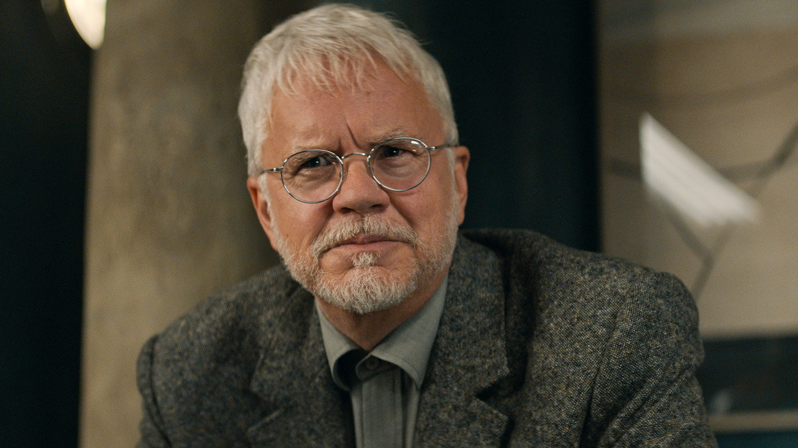
IT başkanı, sonra belediye başkanı. Gözlüklü, kibar, sabırlı. Silodaki herkesten daha fazlasını biliyor ve bildiği şey onu yiyip bitiriyor.
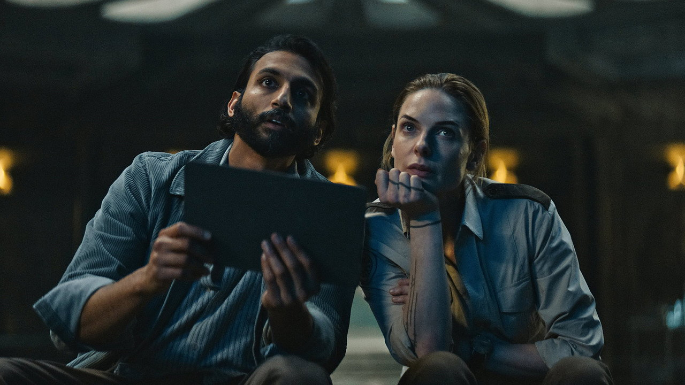
Geceleri kafeteryada oturup ekrandaki gökyüzüne bakan sunucu teknisyeni. Işıkların hareket ettiğini fark eden ilk kişi. Merak, siloda pahalı bir alışkanlık.
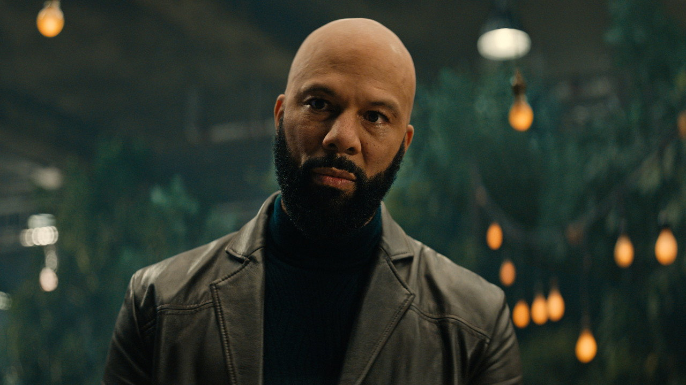
Düzenin sessiz yumruğu. Ailesi için sistemin ayakta kalmasına inanıyor — ta ki sistem ailesini de dosyalamaya başlayana kadar.
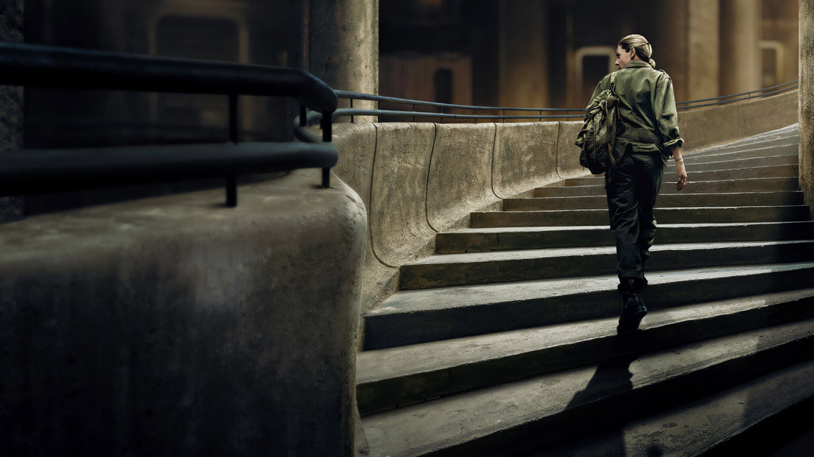
Merdivenin dibi. Yukarıdakilerin “derin aşağı” deyip geçtiği, ışığı, havayı ve suyu üreten katlar. Burada her şey yağ, buhar ve gürültü — ve dizinin kahramanı da tam buradan çıkıyor: Juliette Nichols, Rebecca Ferguson'ın omuzlarında yükselen, inatçı, öfkeli, tamir etmeden duramayan bir mühendis. Yukarısı ona bir şerif rozeti verdiğinde bile çantasında anahtar takımıyla geziyor.
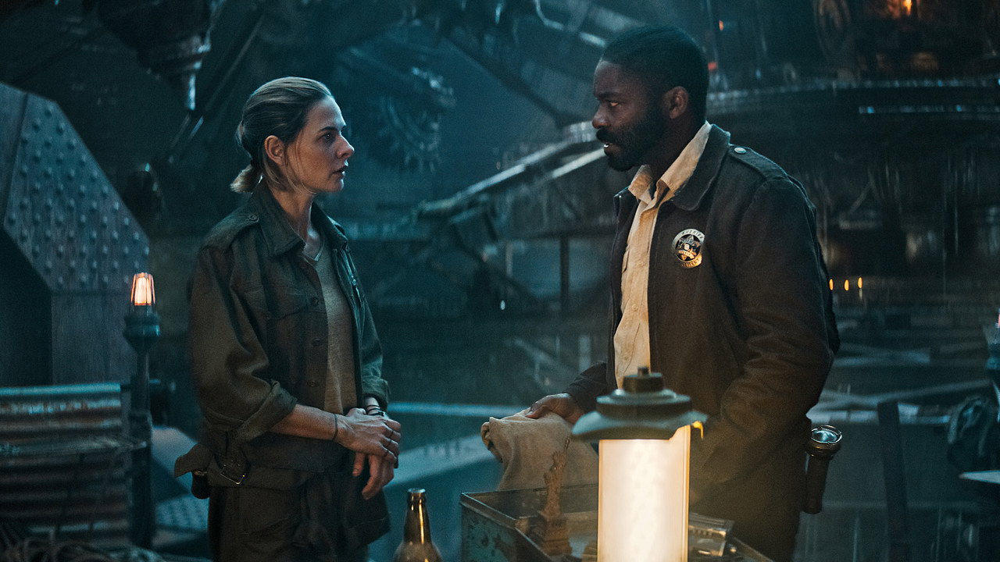
Birinci sezonun en iyi bölümlerinden biri tamamen bu katta geçer: jeneratörün sökülüp onarılması için silonun karanlığa razı edilmesi. Dizi, kıyamet sonrası türünün en büyük gerilimini uzaylılardan ya da canavarlardan değil, bir rotor balansından çıkarmayı başarıyor. Makine sussa, silo ölür — ve bunu herkes bildiği hâlde jeneratörü sadece aşağıdakiler tanır.
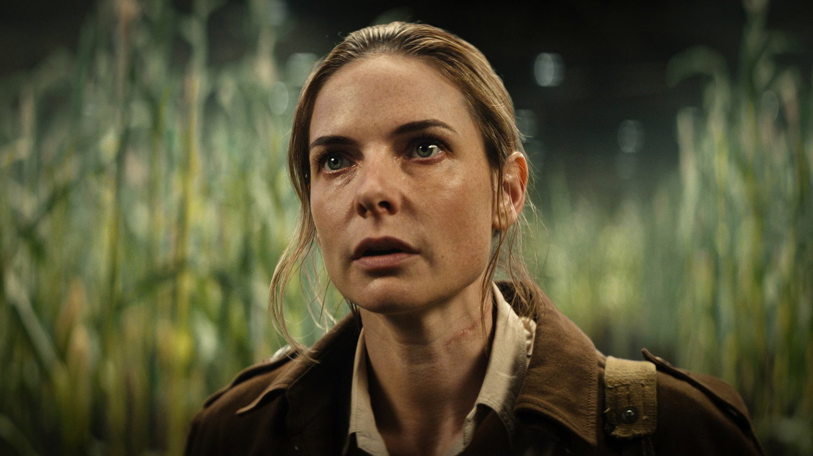
Mühendis, sonra şerif, sonra firari. George'un ölümünün peşinden giderken silonun temeline dokundu. Tepenin ardını gören ilk kişi oldu.
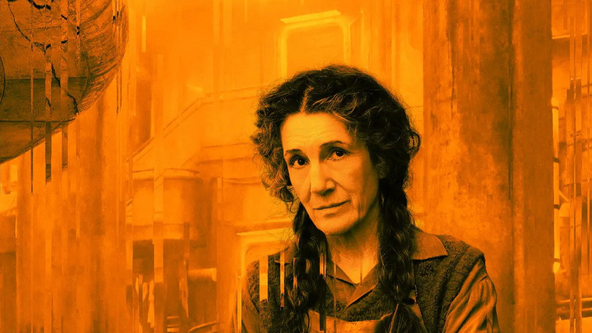
Elektroniğin ustası. Atölyesinden yirmi beş yıldır tek adım çıkmadı — ama telsizinin ulaşmadığı kat yok. Juliette'in gerçek annesi sayılır.
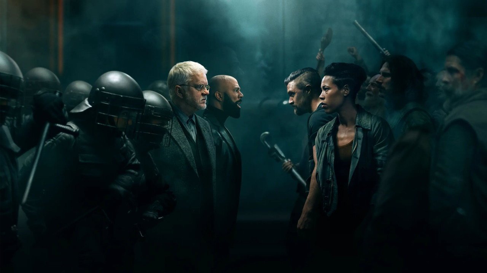
Makine'nin ustabaşı ve en ateşli yüreği. İkinci sezonda, yukarının yalanına karşı aşağının öfkesini örgütleyenler onlar oldu.
Birinci sezonun son sahnesi, türün hafızasındaki en iyi finallerden biri: Juliette temizliğe gönderilir, ölmez, tepeyi aşar — ve kamera geriye çekilir. Vadide onlarca silo daha vardır. Ufukta, yıkık bir şehrin iskeleti. O ana kadar izlediğimiz her şey, dev bir sistemin tek bir hücresiymiş.
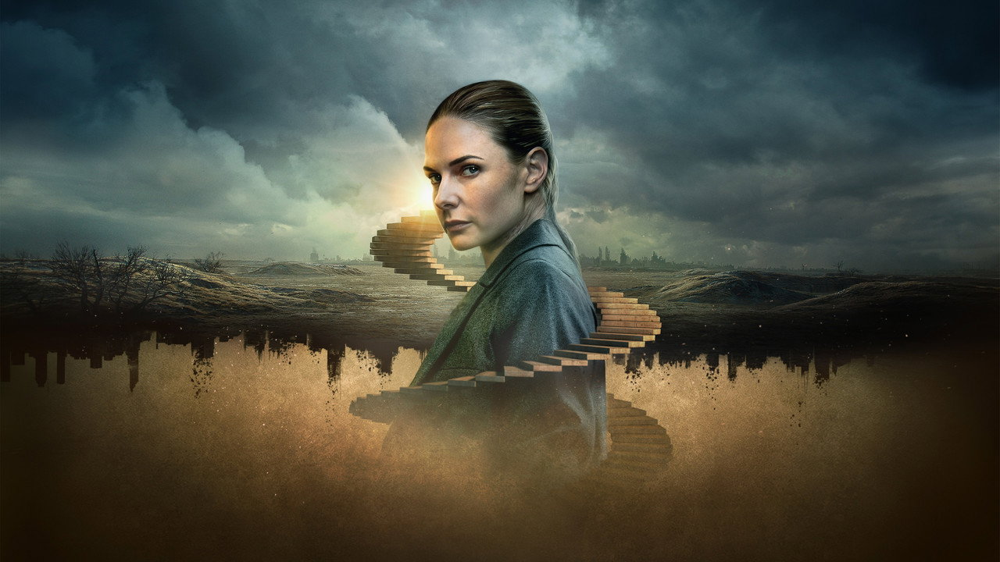
İkinci sezon bizi Silo 17'ye götürüyor: yıllar önce “düşmüş”, merdivenleri boş, alt katları su altında bir hayalet silo. İçinde tek bir sakin kalmış — kasanın içinde büyümüş, kendine Solo diyen Jimmy (Steve Zahn, sezonun en kırılgan performansıyla). Solo'nun bölük pörçük anlattıkları, silolar hakkındaki en büyük soruların kapısını aralıyor: Bunları kim yaptı? Neden 18'in insanları bunu bilmiyor? Ve kapıyı içeriden kilitleyen kimdi?
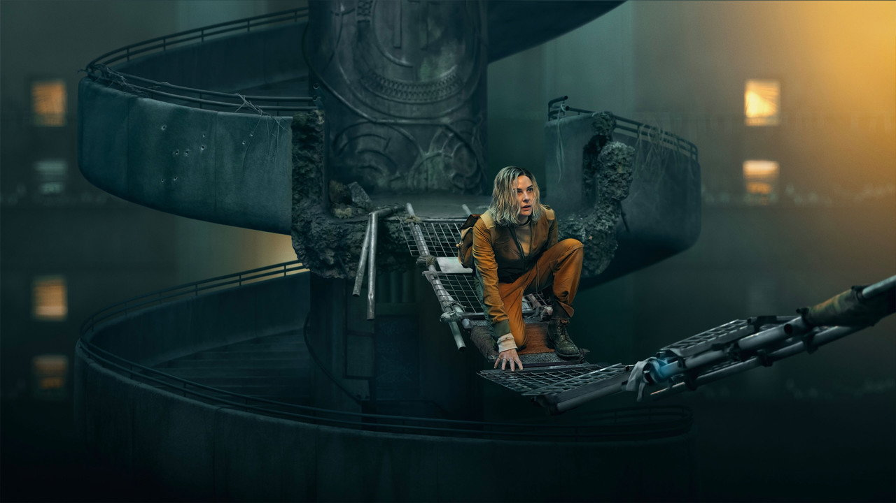
Sezon finali ise cevabı bambaşka bir yerde aramaya başlıyor: silolardan önceki dünyada. Dizinin bundan sonrası, Hugh Howey'nin Shift ve Dust kitaplarının izinde — yani hikâye artık sadece “dışarıda ne var?” değil, “bunu bize kim yaptı?” sorusu.